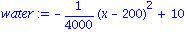
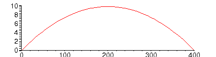
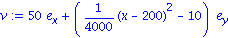
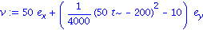
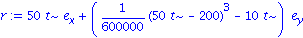
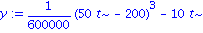
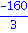

Example: Proud Mary
The Mississippi River in Hannibal, MO runs due south between straight shores and is 400 m wide (not really!). The speed of the water is given in m/min by
| > | water:= 10 - (x-200)^2/4000; |

where x is the distance from the west shore. The speed profile is
| > | plot(water,x=0..400); |

A ferry starts from the west bank and heads due east at all times, at a speed of 50 m/min. How far south of the launch point does the ferry land?
Note that there are just 2 dimensions in this problem. The only thing we start with is total velocity, which is the vector sum of the boat's own motion and the water's.
| > | vel:= evalm( [50,0] + [0,-water] ); |

This expression depends on the x position of the boat. Fortunately, it's obvious that x=50t, because the ferry heads east at constant speed 50. So
| > | vel:= eval( evalm(vel), x=50*t ); |

Since velocity is dr/dt, we can integrate to find the position vector r.
| > | pos:= map( int, vel, t ); |

The boat reaches the east shore at t=8 min. What is the vertical coordinate at the start and finish?
| > | y:= pos[2]; |

| > | eval(y,t=8) - eval(y,t=0); |

This is how many meters the ferry drifts (south) due to the current. A plot of the path:
| > | plot( [pos[1],pos[2],t=0..8], 0..400,-80..0); |
![[Plot]](images/SpaceCurves_64.gif)
| > |